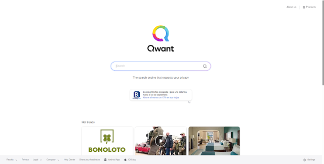
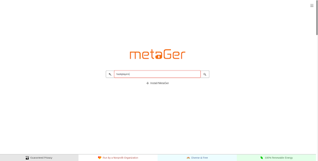
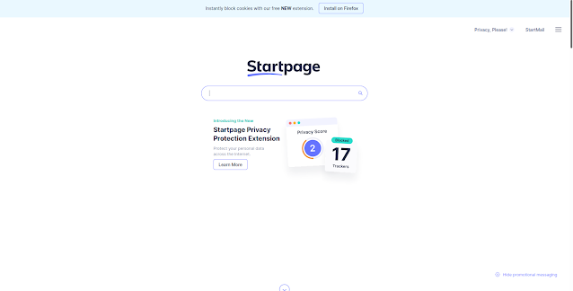
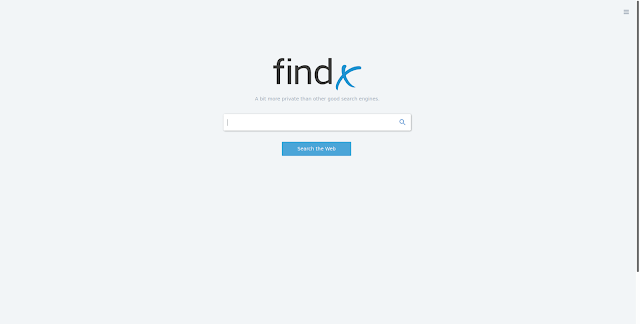
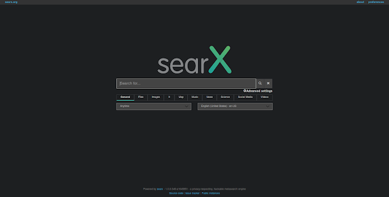
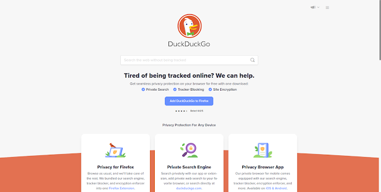

Seis buscadores que respetan la privacidad de sus usuarios
Casi todos los servicios online recopilan, almacenan y venden nuestros datos sobre nuestro comportamiento en la Web, quizás con nuestro consentimiento al aceptar las políticas de cada sitio, pero a menudo sin nuestro conocimiento.
01 April 2023
Casi todos los servicios en línea recopilan, almacenan y venden datos sobre su comportamiento en línea, sin su conocimiento o consentimiento, especialmente Facebook, Twitter, Google, Microsoft, Yahoo y más. Debido a cómo funciona la web, todo lo que tiene que hacer es hacer clic en un enlace y, sin saberlo, opta por cualquier esquema de seguimiento y análisis de datos que utilice la página resultante. Una vez que se ha creado un perfil de usuario, se conserva para siempre. No se le da una oportunidad justa de negociar, reconsiderar o optar por no participar.
Por eso, en el mundo hiperconectado de hoy, creemos que debes preocuparte por tu privacidad, al igual que nosotros nos preocupamos por ella. Si actualmente está utilizando motores de búsqueda como Google, Bing o Yahoo, debe elegir una alternativa aquí si la privacidad es su principal preocupación. Junto con un buen navegador de privacidad y una VPN sin registros, su privacidad permanecerá privada a menos que haya cometido un delito grave.
Qwant

Basado y diseñado en Europa, Qwant es un motor de búsqueda que protege las libertades de sus usuarios y asegura que el ecosistema digital se mantenga saludable. Qwant ofrece los mejores resultados disponibles y nunca intenta obtener información acerca de quién es el usuario o qué está haciendo.
Creen firmemente que lo que se busca en la Web es una parte importante de nuestra privacidad. Por lo tanto, Qwant nunca registra las búsquedas y nunca utiliza datos personales con fines publicitarios u otros.
MetaGer

Un motor de metabúsqueda de código abierto, que tiene su sede en Alemania. Se enfoca en proteger la privacidad del usuario. Las características de MetaGer incluyen la implementación del libre acceso al conocimiento y la democracia digital con:
- Acceso al conocimiento sin control y dictado por estados o fideicomisos.
- Sin almacenamiento de datos privados, mayor demanda de privacidad.
- Acceso anónimo también a los resultados de búsqueda.
- Proxy anónimo en Hidden-Tor-Branch.
StartPage

StartPage ofrece los resultados de la búsqueda web de Google aunque con más privacidad. Las funciones fundamentales son:
- Un servicio de proxy: permite a los usuarios navegar por la web con total privacidad. El proxy permite a los usuarios navegar por sitios web de forma segura y anónima, sin transmitir ninguna información privada de identificación personal a los sitios web que visitan.
- Un generador de URLs: para promover una Internet sin cookies, StartPage tiene un generador de URLs que elimina la necesidad de usar cookies personales. Recuerda su configuración de una manera amigable con la privacidad.
FindX

Código abierto. Sin registro. Sin seguimiento. Algoritmos transparentes. Alojado en Europa. La web debe ser transparente. Deberíamos poder navegar y buscar libremente, y asegurarnos de que los algoritmos no ocultan información. Quieren crear una experiencia en línea transparente y privada para los usuarios. Quieren permitir que las personas tomen medidas y mejoren la web.
Searx

Un motor de metabúsqueda de código abierto, que agrega los resultados de otros motores de búsqueda sin almacenar información sobre sus usuarios. Sin registros, sin anuncios y sin seguimiento. Searx es un metabuscador, inspirado en el proyecto seeks. Proporciona privacidad básica al combinar sus consultas con búsquedas en otras plataformas sin almacenar datos de búsqueda. Las consultas se realizan mediante una solicitud POST en todos los navegadores (excepto Chrome*). Por lo tanto, no aparecen ni en nuestros registros ni en su historial de URL.
DuckDuckGo

No almacenan información personal. Nunca. Su política de privacidad es simple: no recopilan ni comparten información personal. Tampoco almacenan el historial de búsqueda. Por lo tanto, no hay nada que puedan vender algunos sitios a terceros. Otros motores de búsqueda rastrean las búsquedas incluso cuando estamos en modo de navegación privada. DuckDuckGo no rastrea, punto.